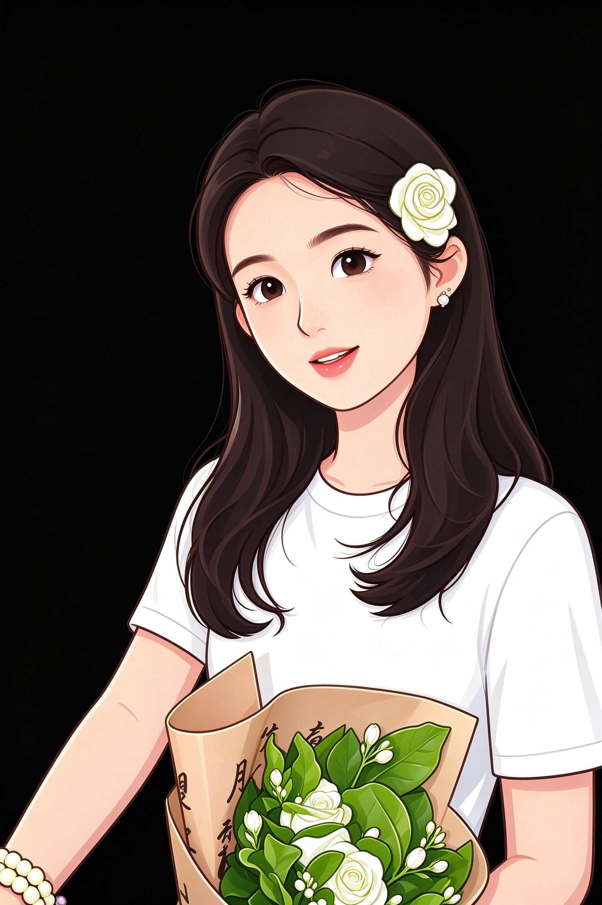
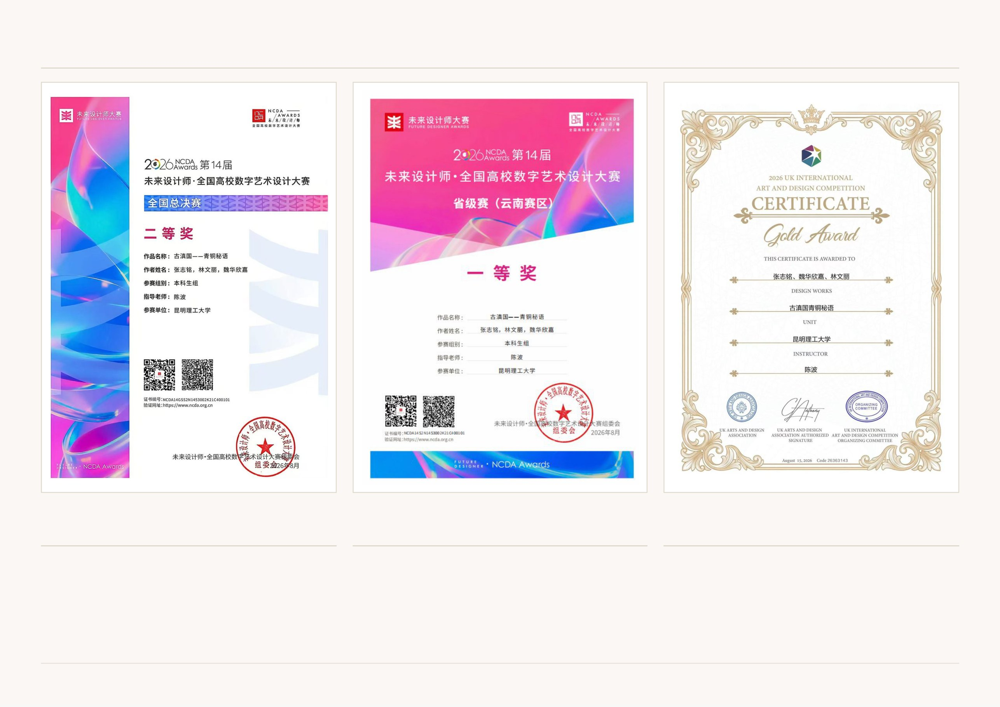
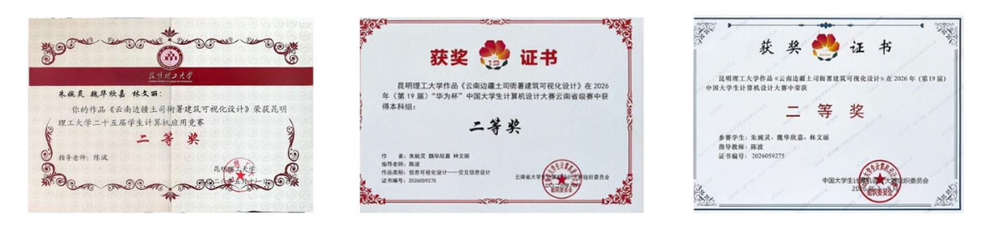
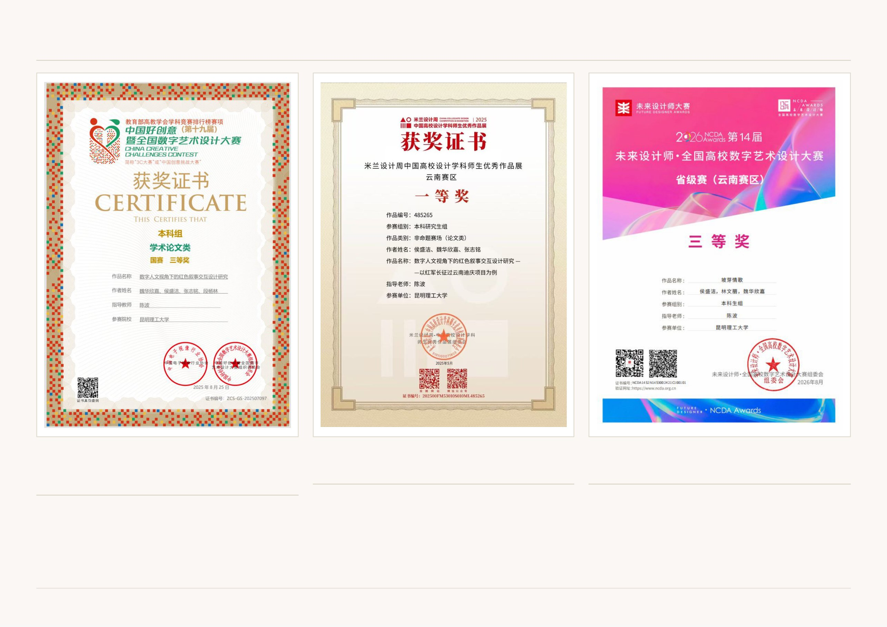

我是魏华欣嘉，专注于游戏设计、交互装置与文化数字化。 用数字技术讲述传统文化故事，让遗产以新的方式走进年轻人的生活。

昆明理工大学数字媒体艺术专业大四学生，过去四年一直在探索"传统文化数字化"这个方向—— 如何用游戏、交互装置、数据可视化等新媒体形式，让云南丰富的民族文化遗产变得更有趣、更容易被年轻人接受。
我的作品涵盖2D游戏开发、硬件交互装置、建筑信息可视化、交互设计原型等多个领域。 我享受从0到1的创造过程，也注重每个细节的打磨。
目前正在申请香港理工大学创新多媒体娱乐硕士项目，希望继续在这个方向深入研究。
以古滇国青铜文化为核心的2D横版解谜游戏。玩家通过探索博物馆展厅、放大观察青铜纹饰、解谜拼接文物碎片，逐步解锁古滇国历史故事与文化寓意。
以云南土司衙署建筑为研究对象，将76个建筑纹样进行系统分类、编码与交互展示，让观众直观理解传统建筑中的文化符号与营造智慧。
面向独居老人的智能交互硬件。通过离线语音、光敏、PIR传感器和物理按键，实现零学习成本的智能关怀与陪伴。
将国家级非物质文化遗产哈尼神话转化为交互式信息可视化网页，用现代设计语言讲述古老的民族故事。
以中国传统戏曲文化为主题的Unity互动游戏，通过沉浸式体验让年轻人了解京剧行当、脸谱与唱腔之美。

① 2026 UK International Art and Design Competition Gold Award（金奖）
② 第14届未来设计师·全国高校数字艺术设计大赛 全国总决赛 二等奖
③ 第14届未来设计师·全国高校数字艺术设计大赛 云南赛区 一等奖

① 第19届中国大学生计算机设计大赛 国家级二等奖（右）
② 第19届中国大学生计算机设计大赛云南省赛（华为杯）二等奖（中）
③ 昆明理工大学第二十五届学生计算机应用竞赛 二等奖（左）

① 中国好创意（第十九届）全国数字艺术设计大赛 学术论文类 国赛三等奖
② 米兰设计周中国高校设计学科师生优秀作品展 云南赛区 一等奖
③ 第14届未来设计师·全国高校数字艺术设计大赛 云南赛区（坡芽情歌）三等奖
如果对我的作品感兴趣，欢迎联系我交流。